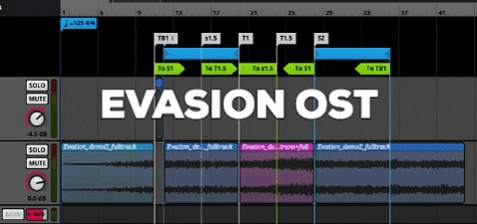

As audio designer I mostly work on game music , sound design and audio implementation .
I also have experience composing for short films ,
but over the last few years my main focus has shifted towards non-linear audio .
What I find most important when working together with other media is that the result feels whole, which is why I try to be as adaptable as possible.
Below some more information
or check out some of my recent work
Below some more information
or check out some of my recent work
Composition
Visual Media
As composer I have a lot of experience composing for games at game jams or for student projects.
I originally started my studies as a film composer, but quickly came in touch with game composing. What really pulled me into composing for games are all the new possibilities, the systems design and the added context of interaction. It also allows me to combine my passion for system design and programming with creating audio.
I have written a paper on this change from linear composing to adaptive composing:
Composing for Games as a Film Composer

Systems Design / Implementation

Implementation
As audio programmer I enjoying designing game audio systems and implementing them. For this I mainly work with FMOD and Unity, but am currently working on a system of my own. The images show the progress of a soundtrack in FMOD and its system design for a (student) game I am currently working on.
Sound Design
Foley and effects
As sound designer I am experienced with both synthesis and (studio) foley. For synthesis I mainly use Massive (X), bu I also have experience with other (mostly digital) synths.
Most sound design I do is for games, which comes with some very interesting challenges. What I love about doing sound design for games is making 'fake' worlds sound real and convincing and adding using audio as a gameplay element.